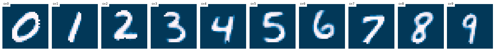

Section author: Maxime Robeyns <maximerobeyns@gmail.com>
3. Inferring Galaxy Parameters¶
The original motivation behind the AGNFinder project was to speed up Bayesin SED fitting. MCMC approaches need to evaluate the likelihood term \(p(x \vert \theta)\) many times which is a slow process, dominated by the evaluation of the forward model \(f : \Theta \to \mathcal{X}\). This is a mapping from physical galaxy parameters \(\theta \in \Theta\) (such as mass, star formation, E(B-V) as well as AGN signatures such as AGN disc and torus, disk inclination and so forth) to (mock) photometric observations \(x \in \mathcal{X}\).
To speed up the evaluation of the likelihood, we can emulate the forward model with some function approximator (for instance a GP or a neural network). This is the approach taken in Alsing et al. [SPEC2020], with good results, and was incidentally the original goal of this project.
In this fork we take a slightly different approach to recovering physical parameters from photometric observations \(p(\theta \vert x)\). We first direct our attention away from emulating (and speeding up) the forward model, and towards the main objective which is to recover the physical galaxy parameters. We also eschew the MCMC methods used in this inference step in favour of a variational Bayesian attack; namely a conditional variational autoencoder [CVAE2015]—a deep conditional generative model with latent variables.
We motivate the use of this model by acknowledging that the low-dimensional photometric observations (8 for the Euclid survey) are potentially weakly predictive of the free galaxy parameters \(\theta\); particularly if \(\theta\) is relatively high dimensional. We are therefore trying to learn a ‘few-to-many’ mapping where the conditional distribution \(p(\theta \vert x)\) is complicated and multi-modal.
If we were to use a discriminative model (such as a conventional feedforward neural network, directly learning the mapping \(f: \mathcal{X} \to \Theta\)) then we would merely be making use of correlations in the dataset of simulated \((\theta, x)\) pairs; \(\mathcal{D} = \{(\theta_{i}, x_{i})\}_{i=1}^{n}\) to make predictions.
Attempting to model the generative process by using a CVAE may allow us to uncover causal relations in an unsupervised manner [IVAE2019], using only the simulated dataset \(\mathcal{D}\). This may make this approach more robust to extrapolation, and use in different surveys.
3.1. (Conditional) Variational Autoencoders¶
Note
To avoid a clash of notation, we will henceforth denote the physical galaxy parameters as \(y\) (previously \(\theta\)). This matches the machine learning nomenclature of denoting outputs to be predicted as \(y\), and model parameters as \(\theta\).
3.1.1. Latent Variable Models¶
A variational autoencoder (VAE) is an example of a latent variable model (LVM). Latent variables, often denoted \(z\), are unobserved variables which ideally represent some disentangled, semantically meaningful, and statistically independent causal factors for variation in the data.
A latent variable model (LVM) is a distribution over the data we care about and the latent variables \(p(y, z)\). We can factorise this in two ways: either working with the posterior \(p(z \vert y)\) to, perhaps stochastically, map (or encode) a datapoint \(y\) to its latent representation \(z\), or the posterior \(p(y \vert z)\) to generate (or decode latents \(z\) to) new plausible \(y\) samples.
In the second factorisation \(p(y, z) = p(y \vert z) p(z)\), the LVM takes the form of
where \(f_{z}\) and \(f_{y}\) are valid density functions, and \(\theta = \{\theta_{z}, \theta_{y}\}\) parametrises the generative process. To sample from \(p_{\theta_{y}}(y \vert z)\) we first sample from the prior over the latent variables \(\hat{z} \sim p_{\theta_{z}}(z)\), and condition on this \(\hat{y} \sim p_{\theta_{y}}(y \vert \hat{z})\). In practice we use neural networks to parametrise \(f_{z}\) and \(f_{y}\).
We could train this model by maximising the log marginal likelihood \(\log p(y)\), which we may interpret as minimising some distance measure \(D\big[p_{\theta}(y) \Vert p^{*}(y)\big]\) between our model \(p_{\theta}(y)\) and the true data distribution \(p^{*}(y)\) (i.e. a mixture of Diracs; one for each point in the training dataset).
Since we are interested in inferring galaxy parameters \(y\) given some photometric observation \(x\), we can extend this idea to a conditional VAE, where we are now after \(p_{\theta}(y \vert x) \approx p^{*}(y \vert x)\); or equivalently minimising \(D\big[p_{\theta}(y \vert x) \Vert p^{*}(y \vert x)\big]\).
A conditional latent variable model is a joint distribution over both some data \(y\) and the latent variables \(z\), conditioned on some context \(x\); \(p(y, z \vert x) = p(y \vert z, x)p(z \vert x)\)—in this application \(y\) are the physical galaxy parameters, and \(x\) are the photometric observations. By analogy to the above, the conditional latent variable model is of the form
Thus we first condition the distribution over the latent variable \(z\) on the photometric observations \(x\). In turn, we condition the distribution over the physical galaxy parameters \(y\) on both the (conditional) latent samples and the photometric observations.
As above, our objective is to find some \(\theta \in \Theta\) such that \(p_{\theta}(y \vert x) \approx p^{*}(y \vert x)\), and this can be acheived by maximising the (log) marginal likelihood of the \(N\) iid. training observations under our model:
Integrating out the latent variable from the LVM \(p_{\theta}(y \vert z, x)\) to find the marginal likelihood (or model evidence) is often intractable. Taking the variational Bayesian approach, we instead optimise a lower-bound on this intractable model evidence, referred to as the evidence lower bound (ELBO).
3.1.2. LVM Objective¶
We will derive this lower bound twice, to appreciate two different intuitions. While we use the conditional form of the VAE throughout—which is certainly more verbose than the vanilla VAE derivations—I think that the consistency with later sections as well as the accompanying codebase justifies this.
Beginning with the importance sampling perspective, we ideally want to take a Monte Carlo approximation to the integral in Equation 1. Unfortunately for most \(z\), \(p_{\theta}(y \vert z, x)\) is likely to be close to zero. Rather than taking the expectation uniformly over \(z\), we instead take it over a ‘proposal distribution’ \(q_{\phi}(z \vert y, x)\). We want samples of \(z \sim q_{\phi}(z \vert y, x)\) to be likely to have produced \(y\); that is, to give non-zero \(p(y \vert z, x)\) for \((x, y)\) in the training data, so that we can approximate the integral with fewer samples.
Taking the expectation wrt. the proposal distribution \(q_{\phi}(z \vert y, x)\) on both sides of Equation 1 (first line below), and introducing \(q_{\phi}\) on the right hand side as a ratio of itself (second line) while applying Bayes rule to rearrange \(p_{\theta}(y \vert z, x)\) (also second line) gives:
Since the KL divergence is non-negative, the \(\mathcal{L}(\theta, \phi; x, y)\) term indeed lower-bounds the evidence:
This last line above is the canonical form in which the ELBO is usually given.
For another perspective, we may derive the lower bound using Jensen’s inequality.
In the first line below, we explicitly write the marginalisation over the latents \(z\), and we also introduce the encoder or recognition model \(q_{\phi}(z \vert y, x)\) as a ratio of itself. On the second line, we use Jensen’s inequality to push the logarithm (a concave function) inside the expectation and introduce the lower bound:
We can now perform the same rearrangements as above on \(\mathcal{L}(\theta, \phi; x, y)\) to reach the canonical form for the ELBO objective that we try to maximise which, for completeness, is
From the above, we can see that the ELBO optimises two quantities that we care about concurrently:
We (approximately) maximise the marginal likelihood, since \(\mathbb{E}_{q_{\phi}(z \vert y, x)}\left[\log p_{\theta}(y \vert z, x)\right] = \log p_{\theta}(y \vert x)\), which makes our generative model better.
We make the approximate posterior \(q_{\phi}(z \vert y, x)\) more similar to the true posterior \(p_{\theta}(z \vert x)\); making the recognition model better.
3.1.3. SGD ELBO Optimisation¶
We wish to optimise this ELBO objective over both \(\theta\) and \(\phi\). While the gradient \(\nabla_{\theta, \phi}\mathcal{L}(\theta, \phi; y, x)\) is in general intractable, we can use Monte Carlo approximations as well as the ‘reparametrisation trick’ to obtain a good unbiased estimator \(\tilde{\nabla}_{\theta, \phi}\mathcal{L}(\theta, \phi; y, x)\).
The derivative wrt. \(\theta\) can be straightforwardly obtained with a Monte Carlo approximation of the expectation:
However, when trying to get unbiased gradients of the ELBO wrt. the variational parameters \(\nabla_{\phi}\mathcal{L}(\theta, \phi; y, x)\), we can no longer commute the derivative with the expectation: \(\nabla_{\phi}\mathbb{E}_{q_{\phi}(z \vert y, x)}[f(x, y, z)] \ne \mathbb{E}_{q_{\phi}(z \vert y, x)}[\nabla_{\phi}f(x, y, z)]\). We resolve to apply the change of variables formula for probability distributions (also called the reparametrisation trick), which will result in:
where \(g(\cdot)\) is an invertible and differentiable function, and \(p(\epsilon)\) is a fixed density (e.g. a standard Gaussian) which we can easily sample from.
While it is straightforward to generate reparametrised samples from \(q_{\phi}(z \vert y, x)\) (we just evaluate \(g(\phi, \epsilon', y, x)\) for some \(\epsilon' \sim p(\epsilon)\)), it is slightly more complicated to evaluate the density of some \(z\) under this posterior distribution, which is given by
We must subtract the log of the determinant of the Jacobian \(\frac{\partial z}{\partial \epsilon}\) in order to conserve unit probability mass before and after the transformation \(g\). It follows that we would like to select (flexible) transformations \(g\) where the log determinant of the Jacobian term is cheap to compute.
Factorised Gaussian Encoder
A good first attempt at specifying the form for \(q_{\phi}(z \vert y, x)\) might be to use an isotropic Gaussian. That is, \(q_{\phi}(z \vert y, x) = \mathcal{N}\big(z; \mu, \text{diag}(\sigma^2)\big)\), where the parameters of this Gaussian \((\mu, \log \sigma)\) are the outputs of the encoder network. Hence we may draw samples from \(q_{\phi}(z \vert y, x)\) as follows:
where \(\odot\) represents an element-wise product and \(f_{\text{enc}}\) is the ‘encoder’ neural network. The neural network directly outputs the log standard deviation for more stable training.
To evaluate the density of some \(z\) under this distribution, we first find the Jacobian of this transformation, which in this isotropic Gaussian case is \(\frac{\partial z}{\partial \epsilon} = \text{diag}(\sigma)\). The determinant of a diagonal matrix is merely the product of the diagonal terms, so we may compute the log determinant of the Jacobian in \(O(n)\) time as:
where \(n\) is the dimensionality of the latent space. Since \(q\) is isotropic Gaussian, we may find the density of a latent vector as a product of univariate Gaussians: \(q_{\phi}(z \vert y, x) = \prod_{i=1}^{n}\mathcal{N}(z_{i}; \mu_{i}, \sigma_{i})\), and so the posterior density can be expressed as a single sum and evaluated in linear time:
when \(z = g(\phi, \epsilon, y, x)\).
Full Covariance Gaussian Encoder
A more flexible inference model \(q_{\phi}(z \vert y, x)\) will generally improve the tightness of the ELBO (since the KL divergence term \(D_{\text{KL}}\big[q_{\phi}(z \vert y, x) \Vert p_{\theta}(z \vert x)]\), which introduces the inequality, will be smaller). We must maintain an efficient sampling procedure (e.g. reparametrised sampling, for which it must remain cheap to evaluate the log determinant of the Jacobian). A full-covariance Gaussian satisfies these desiderata; where \(q_{\phi}(z \vert y, x) = \mathcal{N}(z; \mu, \Sigma)\), and \((\mu, \Sigma) = f_{\text{enc}}(\phi, y, x)\) is a neural network.
The reparametrised sampling procedure is:
where L is a lower triangular matrix with non-zero diagonal elements. The reason for this constraint is that it makes the evaluating the density of \(q_{\phi}(z \vert y, x)\), which in turn requires finding the log determinant of the Jacobian of the above simple. The Jacobian is \(\frac{\partial z}{\partial \epsilon} = L\), and since the determinant of a triangular matrix is the product of the diagonal elements, we get:
As an implementation point, we can output a matrix \(L\) with the desired properties from a neural network by constructing it as:
where \(L_{\text{mask}}\) is a masking matrix with zeros on and above the diagonal, and ones below the diagonal. This ensures that \(L\) is triangular, with \(\sigma\) on the diagonal. We therefore recover the same log-determinant as the isotropic Gaussian case:
and therefore evaluating the density proceeds exactly as before:
Todo
Discuss approaches using normalising flows for the inference model, such as Normalising Flows or Inverse Autoregressive Flows.
Note that the Normalising Flows approach is in theory a straightforward repetition of the full-covariance Gaussian approach outlined above.
3.1.4. Likelihood¶
We have yet to specify a form for \(p\). Recall that in our conditional LVM, the marginal likelihood is found by marginalising out the latent variable
If we have a Gaussian likelihood \(p_{\theta}(y \vert z, x) = \mathcal{N}\big(y; \mu_{\theta}(z, x), \Sigma_{\theta}(z, x)\big)\), then the above is a Gaussian mixture model: for discrete \(z\) with \(K\) possible values, then there are \(K\) components, while for continuous \(z\) this is an infinite mixture, which can be very flexible.
The likelihood needn’t be Gaussian however; for instance for binary MNIST images we might choose instead to use a (factorised) Bernoulli likelihood. We could even use a Laplace likelihood which would model something like the ‘median’ digit image; resulting in sharper images—although this is perhaps a little unwise for it incurs a higher test log likelihood (due to a lower variety) and it’s certainly unusual.
For fun, here is a comparison of some images sampled from the posterior
\(p(y \vert z, x)\) for various likelihoods, where the CVAE was trained on
the MNIST handwritten digit dataset in /notebooks/VAE/basic_vae.ipynb. (This
is good for building intuition; we can immediately tell when a digit ‘looks
right’, but we might not all have the same intuitions for galaxy parameters…)
Gaussian likelihood:
Laplace likelihood:
Bernoulli likelihood:
3.2. Implementation¶
We now have all the components we need to actually optimise the ELBO using SGD. We can re-arrange the ELBO as
We have already derived the expression for evaluating \(\log q_{\phi}(z \vert y, x)\):
where \(z \in \mathbb{R}^{n}\).
In conditional LVMs, some authors choose to sample \(z\) independently of the conditioning information \(x\) at test time, and they do so with a standard Gaussian for the prior density \(p(z \vert x) = \mathcal{N}(z; 0, \mathbf{I})\). For this application however, conditioning the latent variable at test time on the photometric observations seems sensible. If we use an isotropic Gaussian distribution (to match our \(q\) distribution), then we get
Once again, in the above \(n\) is the dimension of the latent vector \(z \in \mathbb{R}^{n}\).
Finally for the log likelihood term \(\mathcal{L}_{\text{logpy}}\), we merely evaluate the likelihood of the \(y\) training datapoint under the appropriate density. Be mindful that this step is prone to be slow; particularly if one naively chooses something like a full multivariate Gaussian likelihood, where evaluating the log probability will involve Cholesky decompositions to invert the covariance matrix. As a rule of thumb, factorising this distribution should be sufficient to keep things speedy.
For expedience and convenience, it can be useful to use the analagous loss function for your chosen likelihood; for instance the mean squared error for a Gaussian likelihood, binary cross-entropy for a Bernoulli likelihood, L1 (mean absolute error) loss for a Laplace likelihood and so on. Just remember to negate it before using it in the ELBO!
Also note that these loss functions may only represent the negative log likelihood up to proportionality; this implicit scaling of the likelihood term relative to the KL divergence term in the ELBO might result in inadvertently ‘tempering the posterior’, which is where we scale the KL divergence by some \(\lambda < 1\):
In the context of VAEs, this is often done intentionally as an implementation detail, where it is referred to as ‘warming up the KL term’ [LVAE2016]. Here, \(\lambda\) is annealed from 0 to 1 at the beginning of training—without this, the ‘variational regularisation term’ (read, KL divergence term) causes the latents in \(q\) to be drawn towards their own prior, which leads to uninformative latents which the optimisation algorithm is not able to re-activate later in training.
There are a fair number of moving parts involved with implementing a CVAE. For
convenience I have tried to abstract away the common code into a base CVAE
class, so as to offer a framework with which to implement variations on the
(C)VAE described above.
The files relevant to CVAE implementation are structured as follows:
agnfinder
├── types.py # arch_t definition
├── inference # Inference related code
│ ├── base.py # Base CVAE classes to extend
│ ├── distributions.py # Distribution objects for CVAE
│ ├── inference.py # Concrete Prior, Encoder, Decoder, CVAE
│ └── utils.py
└── config.py # InferenceParams and CVAEParams
3.2.1. Architecture Description types.py¶
There are up to three different neural networks needed to implement the CVAE:
the recognition or encoder network \(q_{\phi}(z \vert y, x)\),
the (conditional) prior network \(p_{\theta}(z \vert x)\)
the generation or decoder network \(p_{\theta}(y \vert z, x)\)
For easy modification and quick comparisons, these networks are specified along with the other CVAE parameters in the CVAE configuration (described later).
By specifying the MLP architectures through instances of arch_t classes in
the configuration, we can avoid having to write the same neural network
initialisation code and further this keeps the neural network definitions close
together for easy comparison.
The arch_t constructor has the following signature:
- arch_t.__init__(self, layer_sizes: list[int], head_sizes: list[int], activations: Union[nn.Module, list[nn.Module]], head_activations: Optional[list[Optional[nn.Module]]] = None, batch_norm: bool = True) None¶
Describes a (non-convolutional) MLP architecture.
- Parameters
layer_sizes (list[int]) – size of input, and hidden layers.
head_sizes (list[int]) – size of output layer(s)
activations (nn.Module | list[nn.Module]) – instances of activation functions to apply to input / hidden layers. The same activation is re-used for all layers if this is not a list.
head_activations (Optional[list[Optional[nn.Module]]]) – Optional list of activation functions to apply to outputs. Can be
None, or a list of optional instances of activation functions.batch_norm (bool) – whether to apply batch normalisation at each layer.
- Raises
ValueError – if
layer_sizesis an empty list (minimum: one input layer)ValueError – if
len(layer_sizes) != len(activations)when activations is a listValueError – if an activation function does not extend nn.Module
ValueError – if
head_sizesis notlist[int]of length at least oneValueError – if
len(head_sizes) != len(head_activations)
- Example
ANN with 1 hidden layer, ReLU activations, no batch normalisation, and 2 output heads with different activation functions
>>> arch_t(layer_sizes=[28*28, 256], head_sizes=[10, 2], \ ... activations=nn.ReLU(), \ ... head_activations=[nn.Softmax(), nn.ReLU()] \ ... batch_norm=False)
- Example
ANN with 1 hidden layer, ReLU activations, no output activation & batch normalisation:
>>> arch_t([512, 256], [10], nn.ReLU())
- Example
ANN with two output heads, one without and one with activation, respectively:
>>> arch_t([2**i for i in range(10, 5, -1)], [10, 2], \ ... activations=nn.ReLU(), ... head_activations=[None, nn.Softmax()])
3.2.2. Base CVAE Classes base.py¶
This file contains the base classes that implement standard, repetitive code and give structure to the concrete CVAE classes which extend them.
Most of these classes define abstract properties and methods which need to be implemented by the inheriting class.
If any of the classes listed below seem opaque or mystifying, it may be worth having a read through this file to see what’s happening in the background.
_CVAE_Distis a base distribution class which accepts a list of parameters (type aliased toDistParams = list[Tensor]) and has abstractlog_probandsamplemethods. It is perfectly valid to implement these by wrapping these existing methods in a standard PyTorch Distribution._CVAE_RDistis almost identical to the above, however all the methods should be implemented using reparametrised sampling. The abstract methods arelog_probandrsample.CVAEPrioris the base implementation of a prior distribution \(p_{\theta_{z}}(z \vert x)\). The constructor accepts an (optional) neural network architecture description, which will automatically be instantiated. There is one abstract method for inheriting classes to implement:get_dist, which accepts the output of the prior network \(f_{\text{prior}}(\theta_{z}, x)\) passed to the constructor as argument (Noneif no network is used in the prior) and returns a correspondingly parametrised_CVAE_Distobject. .CVAEEncis the base implementation of the recognition or encoder network \(q_{\phi}(z \vert y, x)\). As previously, the constructor accepts a neural network architecture description of typearch_t, except this time it is not optional. The only abstract method to implement is alsoget_dist, which takes the outputs of the encoder network as arguments, and returns a_CVAE_RDist. Recall that we must have a reparametrised distribution as the encoder distribution in order for SGD optimisation of the ELBO to work.CVAEDecis the base implementation of the generator or decoder network \(p_{\theta_{y}}(y \vert z, x)\). The constructor accepts anarch_tnetwork description, and the abstractget_distmethod this time returns a_CVAE_Dist.CVAEis the main base CVAE class, which handles the standard training procedure. You may override thepreprocessmethod, which applies a transformation to the output of the DataLoader before each training iteration; theELBOmethod which combines the log probability of all three distributions, as well as thetrainmodelmethod. While there should be no need to modify it, it can be useful to see how all the components described above come together in the main training loop:
1for e in range(epochs):
2 for i, (x, y) in enumerate(train_loader):
3
4 x, y = self.preprocess(x, y)
5
6 q = self.encoder(y, x)
7 z = q.sample()
8
9 pr = self.prior(x)
10
11 p = self.decoder(z, x)
12
13 logpy = p.log_prob(y)
14 logpz = pr.log_prob(z)
15 logqz = q.log_prob(z)
16
17 ELBO = self.ELBO(logpy, logpz, logqz, iteration_num, total_iters)
18
19 loss = -(ELBO.mean(0))
20 self.opt.zero_grad()
21 loss.backward()
22 self.opt.step()
3.2.3. CVAE Distributions distributions.py¶
The point of separating the distributions into their own classes, which are all collected in this file is that this maximises code re-use, and makes it effortless to experiment and perform ablation studies with different distributions by changing a few lines in the main configuration.
Classes in this file should either extend _CVAE_Dist or _CVAE_RDist.
3.2.4. AGNFinder CVAE Classes inference.py¶
This is where the concrete CVAEPrior, CVAEEnc and CVAEDec classes
(respectively, \(p_{\theta}(z \vert x)\), \(q_{\phi}(z \vert y, x)\) and
\(p_{\theta}(y \vert z, x)\)) are defined.
Any changes to the vanilla CVAE training procedure, ELBO calculation or
preprocessing can also be performed by extending the base CVAE class.
3.2.5. Utility Classes utils.py¶
Contains data loaders for galaxy data. It is better to perform any data
transformations here (once, before of running the inference code), rather than in
the CVAE.preprocess method, which is run once at the beginning of each
iteration of each epoch.
3.2.6. CVAE Configuration config.py¶
The components of the CVAE implementation are structured in the way that they are mainly because this affords us a very flexible way to compose different components of the model. Hence with minimal changes to the configuration file, we can perform fast experimentation using tested components.
There are two main configuration classes relating to the inference code. The
first, InferenceParams relates to high-level details:
1class InferenceParams(ConfigClass):
2 epochs: int = 8
3 batch_size: int = 32
4 split_ratio: float = 0.9 # train / test split ratio
5 dtype: t.dtype = t.float64
6 device: t.device = t.device("cpu")
7 model: cvae_t = CVAE
8 dataset_loc: str = './data/cubes/photometry_simulation_100000n_z_0p0000_to_4p0000.hdf5'
On line 7, we specify a reference to a class extending CVAE in base.py
(or CVAE itself).
The model is parametrised by CVAEParams, which is a condensed description of
the entire CVAE
1class CVAEParams(ConfigClass, base.CVAEParams):
2 cond_dim = 8 # x; dimension of photometry (Euclid)
3 data_dim = 9 # y; len(FreeParameters()); dimensions of physical params
4 latent_dim = 4 # z
5
6 # Standard Gaussian prior p_{theta}(z | x)
7 prior = inference.StandardGaussianPrior
8 prior_arch = None
9
10 # Gaussian recognition model q_{phi}(z | y, x)
11 encoder = inference.GaussianEncoder
12 enc_arch = arch_t(
13 layer_sizes=[data_dim + cond_dim, 32],
14 activations=nn.ReLU(),
15 head_sizes=[latent_dim, latent_dim],
16 head_activations=None,
17 batch_norm=True)
18
19 # generator network arch: p_{theta}(y | z, x)
20 decoder = inference.GaussianDecoder
21 dec_arch = arch_t(
22 layer_sizes=[latent_dim + cond_dim, 32],
23 activations=nn.ReLU(),
24 head_sizes=[data_dim, data_dim],
25 head_activations=None,
26 batch_norm=False)
Hopefully the above is mostly self explanatory. The only slight subtlety is that
you must ensure that the number of outputs of the distribution networks
(the length of the head_sizes array) matches the number of parameters that
the corresponding distribution is expecting.
3.3. References¶
- CVAE2015
Sohn, Kihyuk, Honglak Lee, and Xinchen Yan. ‘Learning Structured Output Representation Using Deep Conditional Generative Models’. In Advances in Neural Information Processing Systems, Vol. 28. Curran Associates, Inc., 2015. https://proceedings.neurips.cc/paper/2015/hash/8d55a249e6baa5c06772297520da2051-Abstract.html.
- SPEC2020
Alsing Justin, Hiranya Peiris, Joel Leja, ChangHoon Hahn, Rita Tojeiro, Daniel Mortlock, Boris Leistedt, Benjamin D. Johnson, and Charlie Conroy. ‘SPECULATOR: Emulating Stellar Population Synthesis for Fast and Accurate Galaxy Spectra and Photometry’. The Astrophysical Journal Supplement Series 249, no. 1 (26 June 2020): 5. https://doi.org/10.3847/1538-4365/ab917f.
- IVAE2019
Kingma, Diederik P., and Max Welling. ‘An Introduction to Variational Autoencoders’. Foundations and Trends® in Machine Learning 12, no. 4 (2019): 307–92. https://doi.org/10.1561/2200000056.
- LVAE2016
Sønderby, Casper Kaae, Tapani Raiko, Lars Maaløe, Søren Kaae Sønderby, and Ole Winther. ‘Ladder Variational Autoencoders’. In Advances in Neural Information Processing Systems, Vol. 29. Curran Associates, Inc., 2016. https://papers.nips.cc/paper/2016/hash/6ae07dcb33ec3b7c814df797cbda0f87-Abstract.html.